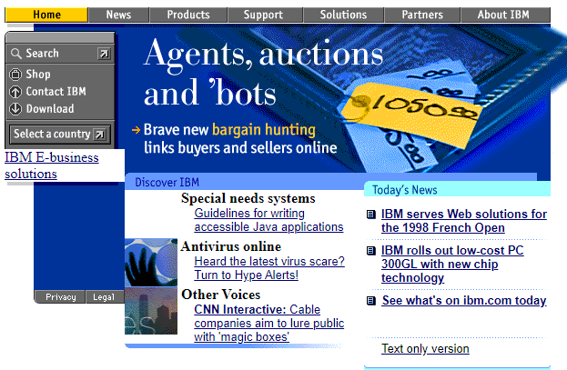
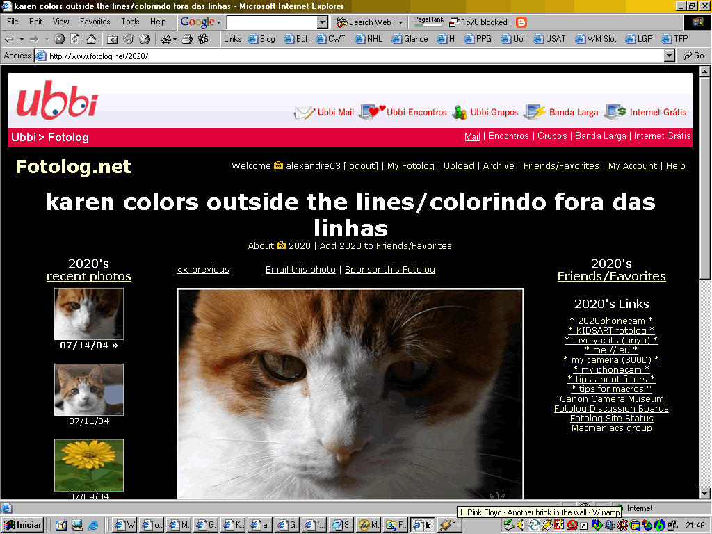
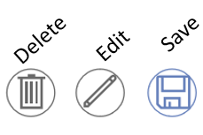
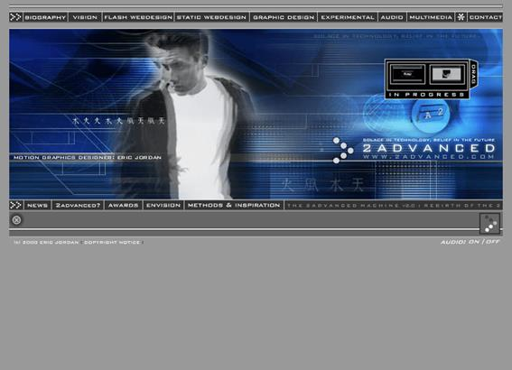
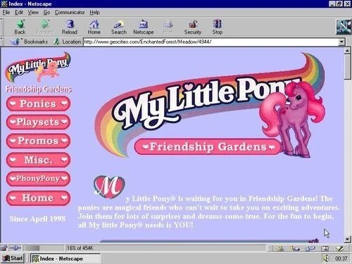
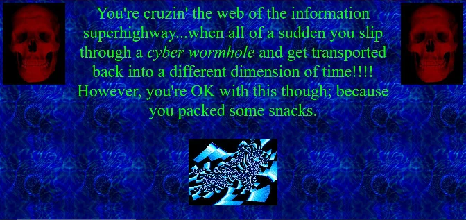
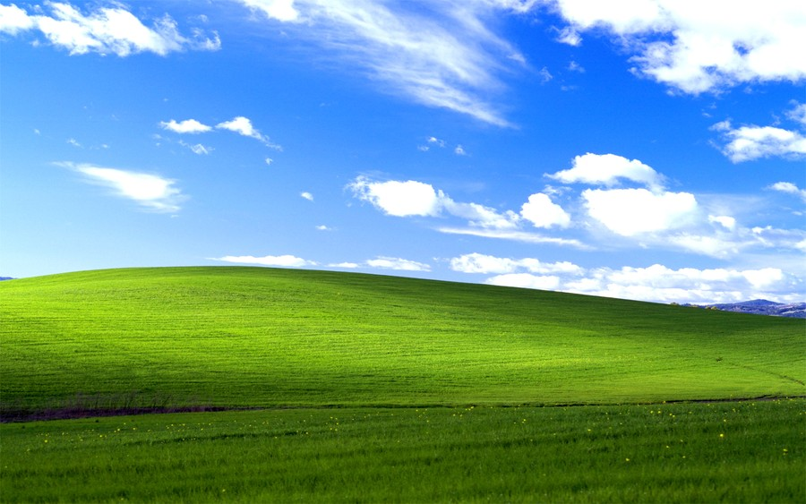

Imersão
Imersão
 Estéticas Digitais
Estéticas Digitais
Estéticas Digitais
Y2K.txt
Webcore.txt
Frutiger Aero.txt
Imersão
A Construção da Identidade Digital nas Interfaces da Internet
A chegada da internet ao mundo transformou a maneira como nos comunicamos, trabalhamos e nos relacionamos. Novas profissões, interações e possibilidades foram criadas, e, com isso, a necessidade de constante aprendizado diante dessas mudanças. Em um curto espaço de tempo, nossa presença online cresceu. A ideia de equilibrar a vida real com a virtual já foi tema de muitos debates, e como André Lemos reflete, já estamos imersos no ciberespaço, onde não há mais uma distinção clara entre estar "dentro" ou "fora" da internet. Não estamos apenas online: deixamos pegadas digitais, dados com nossas informações que, apesar de geradas por nós, não nos pertencem.
“Não se deve confundir a cibercultura com uma subcultura particular, a cultura de uma ou algumas ‘tribos’. Ao contrário, a cibercultura é a nova forma de cultura. Entramos hoje como penetramos na cultura alfabética há alguns séculos.” — André Lemos, *Cibercultura*.
Nos anos 90, quando um computador era um recurso restrito às classes altas, sites como Yahoo!, AltaVista e AOL dominavam a web, além de portais de notícias e fóruns de discussão. A internet era, em grande parte, um espaço estático, com páginas repletas de texto e poucos recursos visuais. À medida que o objeto se tornava mais acessível, as interfaces se tornavam mais interativas e a troca de informações se transformava em um novo meio de sociabilidade. Os sites passaram a ser utilizados não apenas por desenvolvedores, mas também pelo público geral, embora limitado às pessoas com melhores condições financeiras. Em 1996, o valor de um computador básico custava cerca de US$ 1500 a US$ 2000. Naquela época, portais como Yahoo!, AltaVista e AOL dominavam a internet, enquanto fóruns de discussão, navegadores de busca, sites para downloads de músicas, livros e imagens, além do revolucionário e-mail, eram ferramentas essenciais. As páginas, em sua maioria, eram estáticas, com muito texto, poucas imagens e recursos visuais limitados. Muitos sites com muitos acessos funcionavam como agrupamentos de hyperlinks, conectando informações e permitindo o acesso a outras páginas com um simples clique.

IBM.COM, 1998
Nos anos 2000, a internet tomou rumos cada vez mais próximos do que conhecemos hoje. A Amazon e o eBay já eram reconhecidos pelo comércio online, enquanto a Wikipedia e o LinkedIn viam o crescimento de seus números de usuários. O Google se consolidava como o principal mecanismo de busca, e diversas redes sociais, como Facebook, YouTube, Twitter, MySpace e Fotolog, além dos crescentes jogos online, ganhavam popularidade. A conexão de internet também se tornava mais rápida, e o universo digital se aproximava de uma comunidade, seja por meio das lan houses ou de fóruns virtuais. A troca de informações entre as pessoas passou a mudar as dinâmicas e as relações com a internet. A Web 2.0 consolidou-se como um agrupamento de conteúdos colaborativos, trocas de mídias sociais e interações em tempo real. Em 2008, o Facebook já havia atingido 100 milhões de usuários. Os blogs se tornaram mais comuns e pessoais. Apesar da falta de habilidades técnicas para a criação de sites propriamente ditos, a personalização feita pelos usuários era bem perceptível. Isso não se restringia apenas a sites ou blogs pessoais, mas também às várias contas e nomes de usuários que passavam a cadastrar seus nomes, gostos, fotografias, etc. Novos usos de cores, símbolos, gírias, abreviações e modos de expressão surgiram, refletindo as personalidades dos usuários e coletivos.

Fotolog, 2004
Ainda assim, a internet ainda era uma verdadeira "terra de ninguém". Assim como outros espaços passíveis de exploração no sistema capitalista, essa fonte de conhecimento sempre se limitou a diversos contextos sociais, seja pela classe social ou até mesmo por limitações geográficas. Esses "territórios" foram criados, e a internet foi povoada de maneira cada vez mais produtiva, mas ainda se viam novos hábitos e formas de uso surgindo constantemente. O aprendizado sobre informática ocorria de forma descentralizada, com diferentes contextos sociais moldando as formas de interação.
No início da popularização da internet, as interfaces apresentavam características muito diversas entre si. Sistemas como o Windows exploravam uma complexidade visual, mas funcional, com simbologias semelhantes às do mundo real. Essa visualidade contrastava com experiências mais personalizadas, como blogs e plataformas como Tumblr, Fotolog e Blogger, que ofereciam um espaço para experimentação e compartilhamento, muitas vezes sem pretensões comerciais. Nesses ambientes, o principal objetivo era explorar, criar e compartilhar por prazer, sem o foco na organização ou funcionalidade. Com a padronização de processos e interfaces, o ambiente digital se tornou mais acessível e compreensível para um público mais amplo. A semelhança entre funcionalidades, como as encontradas em sites de compras e redes sociais, não apenas facilitou o primeiro contato dos usuários, mas também promoveu a consolidação do uso contínuo. Essa evolução reflete tanto mudanças tecnológicas quanto transformações culturais e sociais impulsionadas pelo avanço da internet.

Lixeira, lápis e disquete.
Ao longo dos anos, a análise das navegações, testes e áreas de estudo, as preferências e os cliques dos usuários possibilitaram a criação de padrões de usabilidade a partir de mapas mentais de milhares de pessoas. Jakob Nielsen define usabilidade como "um atributo de qualidade que avalia quão fácil uma interface é de usar" ou "a medida da qualidade da experiência de um usuário ao interagir com um produto ou sistema". Esses padrões ajudaram a formar mapas mentais que orientam os indivíduos em suas interações com interfaces digitais.
Seja através de livros, ao explorar novos conhecimentos, ou ao viajar por diferentes partes do mundo, a internet sempre se apresentou como uma janela para a exploração pessoal. Em um mundo onde a comunicação física muitas vezes é limitada, a internet oferece a oportunidade de conectar e expressar a essência do "eu" em um espaço global, permitindo que cada indivíduo seja autor de sua própria narrativa. Através de logins, cadastros, postagens e atualizações em perfis, as pessoas começaram a criar identidades digitais, compartilhando não apenas informações, mas também emoções, experiências e pontos de vista. Esse processo de interação nos diferentes espaços virtuais era, e ainda é, uma maneira de se reinventar constantemente, ajustando-se ao fluxo de tendências e ao modo como o mundo digital evolui. Quando tudo isso era novo, a sensação de imersão e a chance de se mostrar sem as barreiras físicas criavam uma dinâmica de descobertas, expressão e construção de comunidades, que hoje fazem parte do nosso cotidiano digital.
Em conclusão, a internet, apesar de sua aparência mais uniforme e padronizada nos dias atuais, já foi um espaço de grande diversidade estética, onde estilos como Webcore, Vaporwave, Cyberpunk e Grunge floresceram. Esses movimentos refletiam a criatividade dos usuários, que, sem as limitações dos designs padronizados de hoje, criavam páginas digitais carregadas de personalidade. Embora as interfaces modernas sejam mais minimalistas e focadas na usabilidade, as influências dessas estéticas ainda são visíveis, lembrando-nos de um período em que a web era um campo fértil para a experimentação visual e a expressão individual.
Integrantes da equipe:
- Hanna Farias
- Pamela Atanázio
- Natan Mendes
- Maria Camilla
Y2K
Y2K (1990 - 2000)
A estética Y2K, caracteriza-se por elementos futuristas, translúcidos, iridescentes e brilhantes, refletindo o otimismo tecnológico e a cultura pop do final dos anos 1990 e início dos anos 2000. No web design dessa época, essa estética manifestou-se através de interfaces translúcidas, uso de cores metálicas e vibrantes, tipografias futuristas e elementos gráficos que remetiam à inovação tecnológica. Sites como o "2Advanced Studios v1" de 2000 exemplificam essa abordagem, apresentando designs arrojados e interativos que capturavam o espírito da era digital emergente.

Para explorar mais sobre a estética Y2K no web design dos anos 2000, o Web Design Museum oferece uma exposição dedicada ao tema,
apresentando exemplos de sites emblemáticos da época.
[webdesignmuseum.org]
Atualmente, há um ressurgimento do interesse pela estética Y2K, com designers contemporâneos incorporando elementos dessa era em projetos modernos, mesclando nostalgia com inovação. Esse movimento destaca a natureza cíclica das tendências de design e a contínua influência do passado nas criações atuais.
A estética Y2K, que emergiu no final dos anos 1990 e início dos anos 2000, é o resultado da combinação do início da era da internet
(e suas tecnologias) e as expectativas em relação ao futuro pós virada milênio (inclusive seu nome é referência ao evento Y2K, mais
conhecido no Brasil como o Bug do Milênio, que foi boato iniciado no final dos anos 90 sobre um suposto bug que afetaria os
computadores da época na virada de 1999 para 2000).
No web design dessa época, essa estética se manifestou por meio de elementos visuais específicos que buscavam transmitir uma sensação futurista e inovadora.
Características do Web Design Y2K:
- Paleta de Cores Vibrantes: Uso de cores neon e metálicas, como verde-limão, rosa-choque e azul brilhante, frequentemente com efeitos cromados e holográficos.
- Tipografia Marcante: Fontes estilizadas, muitas vezes curvas ou futuristas, que capturavam o espírito tecnológico da época.
- Elementos Gráficos 3D: Incorporação de gráficos tridimensionais de baixa fidelidade, com aparência brilhante e quase caricatural.
- Texturas e Efeitos Especiais: Aplicação de texturas metálicas, efeitos de brilho e falhas digitais para enfatizar a modernidade e o avanço tecnológico.
- Animações e GIFs: Uso abundante de GIFs animados e elementos em movimento para tornar as páginas mais dinâmicas e interativas.
Na era Y2K, tudo era brilhante. O design era futurista, os efeitos cromados para fontes estavam de repente facilmente disponíveis nos computadores de todos, e os gráficos 3D estavam se tornando avançados o suficiente para fazer objetos brilhantes que pareciam totalmente radicais. Esse visual poderia envolver um cromo brilhante com reflexos claros, um brilho metálico fosco ou um efeito holográfico perolado com muitos azuis, brancos e rosas suaves.
Esteticamente, tem acenos para a era espacial, incorporando formas de blobby e texturas brilhantes. Também faz referência ao estilo hip-hop com sua adoção de bling, flash e formas exageradas e cultura rave com suas cores doces brilhantes e imagens psicodélicas.
Muito disso se deve à tecnologia da época. No final dos anos 90 e início dos anos 2000, o desenvolvimento web ainda estava surgindo, e a maioria dos usuários tinha conexão de baixa largura de banda, levando a imagens pixeladas ou de baixa fidelidade, e tipos rudimentares de animação (como formas giratórias).
No entanto, a tecnologia estava se desenvolvendo rapidamente, e os designers também estavam testando coisas novas e ultrapassando os limites do que poderiam fazer graficamente, como curvas e curvaturas. “As curvas reinavam supremas na estética Y2K, pois não eram tão fáceis de fazer antes, então tinham o apelo adicional de serem algo novo”, disse Evan Collins, criador do Consumer Aesthetics Research Institute.
Webcore
WEBCORE (1990 - 2000)
A Webcore resgata elementos do design da internet dos anos 1990 e início dos anos 2000, através do uso de características como gráficos pixelados, GIFs animados, clipes de áudio ao fundo, imagens de baixa resolução, símbolos, etc. Essa estética busca reviver a sensação de auto expressão e liberdade criativa dos primeiros anos da internet, antes da padronização e da ascensão das redes sociais dominantes.
A estética, muitas vezes, trás um sentimento de "internet sem filtros" — um lugar onde a individualidade dos usuários era mais destacada e o design era mais “rudimentar” mas cheio de personalidade dos seus usuários. Ela pode ser vista como uma reação contra a padronização e a “sofisticação” da internet atual, que privilegia o minimalista e interfaces limpas.
Elementos ao redor do Webcore:
- Jogos Flash
- Dark Web
- The Sims
- Pirataria
- Fóruns
- Bate-papo online


Frutiger Aero
Frutiger Aero (2000 - 2010)
Frutiger Aero é a expressão que descreve uma tendência do design que estava presente em estéticas de interfaces e da Internet entre a década de 2005 até 2013. O termo “Frutiger” é uma homenagem ao designer Adrian Frutiger, criador de diversas tipografias humanistas que eram comumente utilizadas em interfaces de computadores antigos. Já “Aero” remete ao Windows Aero, uma interface do sistema operacional do Windows que ficou em vigor durante o desenvolvimento do Windows Vista e Windows 7.
Segundo Sofi Lee, essa estética é caracterizada pelos seguintes elementos:
- Esqueumorfismo, termo utilizado para descrever técnicas do design que incorporam ideias antigas em novas tecnologias.
- “Glossy” design, aspecto de superfície brilhante, lustrosa.
- Tipografias humanistas de Frutiger.
- Paletas de cores terciárias.
- Elementos transparentes.
- Fotografias de auroras boreais.
- Fotos com efeito Bokeh, efeito de luz em formas circulares.
- Fotos macro de grama.

Grassland Wallpaper - Windows 7
T-Mobile MyTouch 3G (2009)
A partir de 2007, a estética Frutiger foi adotada universalmente trazendo elementos como humanismo e consciência climática em harmonia com aspectos tecnológicos. Essas características são passíveis de crítica, tendo em vista que foram aplicadas por grandes empresas com o intuito de fomentar um discurso eco-friendly, apesar de continuarem promovendo o consumismo e continuarem adotando ações que prejudicam o meio-ambiente.
A partir de 2010, o uso do Frutiger Aero passa a decair. O esqueumorfismo passa a ficar em desuso enquanto o “Flat design” tem sua ascensão. Com o lançamento do Windows 8 e o IOS 7, o Frutiger Aero passa a ser esquecido em detrimento do crescimento do design minimalista.
Imersão
Estéticas
Y2K
Webcore
Frutiger Aero
UFBA
Internet Explorer
 Meu computador
Meu computador
 O Intenet Explorer parou de funcionar.
O Intenet Explorer parou de funcionar.